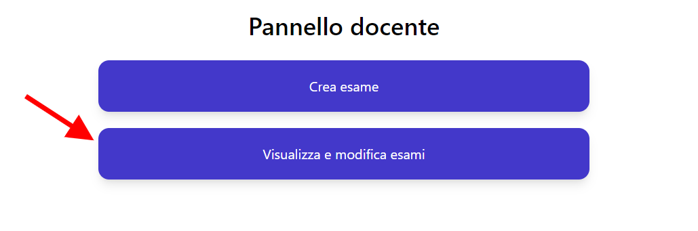
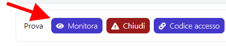

Monitorare un esame
È possibile monitorare l'andamento di un esame in corso utilizzando la dashboard. La dashboard permette di visualizzare in tempo reale le seguenti informazioni riguardanti l'esame:
- La data e ora prevista della fine dell'esame.
- Il numero di partecipanti all'esame.
- Il progresso medio degli esami degli studenti, ossia il numero di esercizi in media completati da ogni studente rispetto al numero totale di esercizi.
- Il numero di esami terminati.
La dashboard permette inoltre di monitorare il progresso dei singoli studenti, dando la possibilità di filtrare gli studenti per nome e cognome, corso, email e progresso.
Accedere alla dashboard
Se non hai fatto il login
- Effettua il login con le tue credenziali di ateneo.
- Clicca il pulsante Visualizza e modifica esami e comparirà la lista degli esami che hai creato e di cui sei referente.

- Clicca il pulsante Monitora dell'esame che vuoi monitorare e comparirà la dashboard dell'esame.

Se sei nella pagina Lista esami
- Clicca il pulsante Monitora dell'esame che vuoi monitorare e comparirà la dashboard dell'esame.